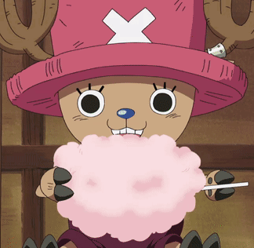

Hello World
Challenge
With a partner, create a basic HTML file and a CSS style file, edit it, view it in your browser, and inspect it.
Reflection
Hey, This is Cody and Kevin. We met in Section B. We are having a good day.
Results
we sucessfully coded this site and I really like the look and feel of our little home page.